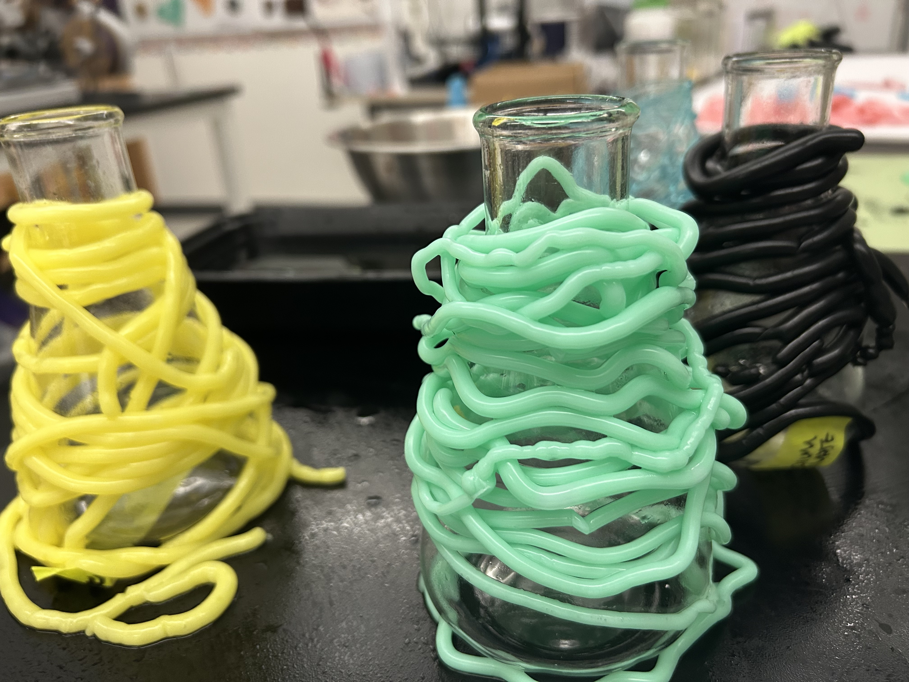

recipe 01
Bioyarn
An alginate-based bioyarn made by extruding sodium alginate into a calcium chloride bath. This recipe can be adapted with food coloring or natural pigments.

Materials
- 6 g sodium alginate powder
- 10 g glycerine
- 200 mL water
- 5 g vegetable oil
- Optional: food coloring or natural pigments
- Syringe or squeeze bottle
- Calcium chloride solution bath
- Clean water bath for washing
- PPE: gloves and eye protection
Process
- Blend sodium alginate powder, glycerine, water, vegetable oil, and optional color until smooth.
- Store the alginate mixture in the fridge overnight to reduce bubbles.
- Separately prepare a calcium chloride bath by dissolving 30 g calcium chloride in 1000 mL water.
- Fill a syringe or squeeze bottle with the sodium alginate mixture.
- Extrude the alginate mixture in a long noodle into the calcium chloride bath.
- Let the alginate noodle sit in the calcium chloride bath for about 1 minute.
- Transfer the bioyarn to a clean water bath to wash off excess calcium chloride.
- Wrap the bioyarn around a glass jar or flask to air dry.
- Fully dried bioyarn takes about 2–3 days.
Lineage + References
This bioyarn recipe is adapted from common sodium alginate fiber techniques used in biomaterials and biofabrication practices.
Safety note:
Calcium chloride solutions can irritate skin and eyes. Wear gloves and eye protection, wash hands after handling,
and avoid splashes. See an example
calcium chloride SDS
before running this activity.